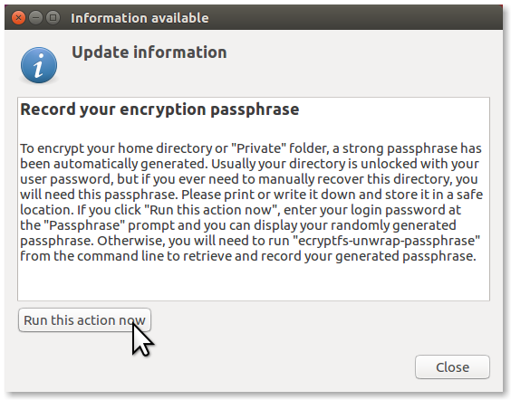
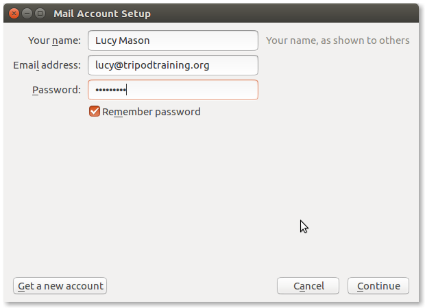
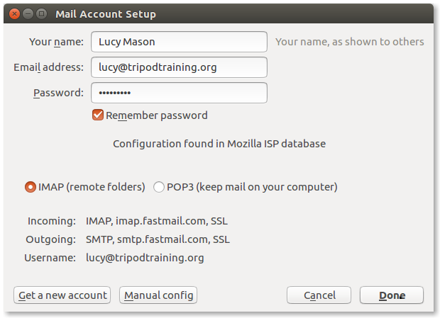
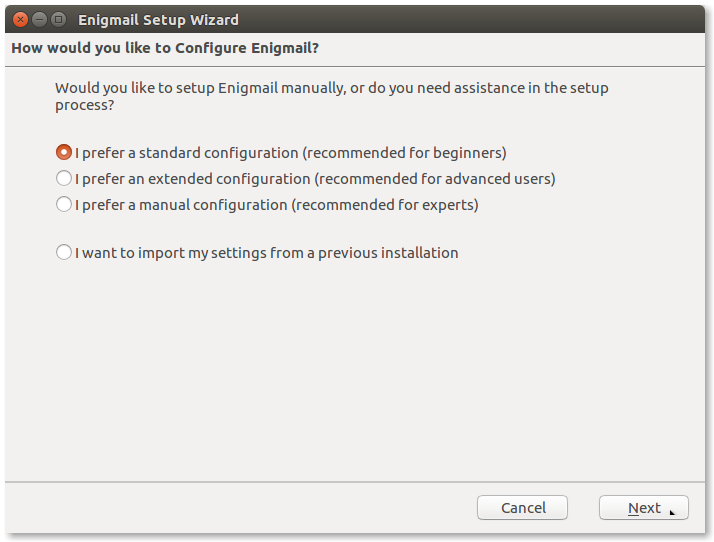
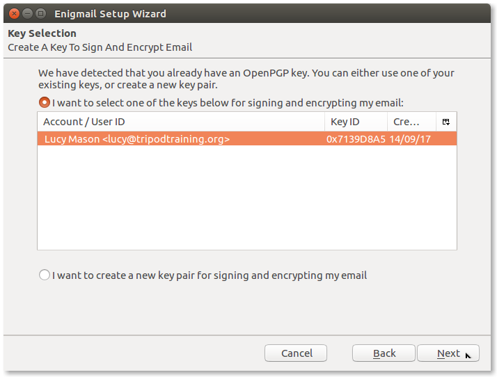
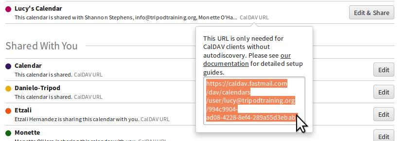

Tripod Computer Setup
- Buying a computer
- Testing a new computer
- Installing Ubuntu
- Setting up a new user account
- Setting up email (Thunderbird)
- Setting up email encryption (Enigmail)
- Setting up calendars (Lightning)
- Other things to do
Buying a computer
For desktop computers I've been buying refurbished Lenovo ThinkCentre's
off eBay, and for laptops I've been buying refurbished Lenovo ThinkPad
X-series (X230, X240, ...). These are business computers that are rugged
and last for a long time. They get decommissioned and sold off, still perfectly
functional, in large numbers when companies upgrade every few years.
As a result there are lots of them on eBay, so prices are low.
ThinkCentres and ThinkPads also have easily replaceable memory,
hard drives, batteries, etc and Linux works well on them.
Testing a new computer
When you get a second-hand or refurbished computer you should run
it through some tests to make sure that it's all working, and return
it if you find any problems.
For more information about all these tests see
Is Your Computer Stable?
on Coding Horror.
-
The computer will probably come with Windows installed. Boot into
Windows and make sure the screen, sound, touchpad, keyboard, and
wifi are all working. (Otherwise if you install Linux and something
doesn't work, you may mistakenly think it's a Linux problem.)
Also check that the computer is as described when you bought it
- processor, memory, hard drive.
Also carefully check the screen and the outside of the computer
for defects, cracks, etc.
-
To test the memory, boot memtest from your Ubuntu USB drive and run
it for a few hours, at least until it reports one complete pass.
To run memtest from an Ubuntu USB you have to hit Escape after
the BIOS has started booting from the USB but before the Ubuntu
boot logo has appeared. It'll then ask you to select your language,
then show you a menu of five choices including
Test memory which will launch memtest.
-
To test the CPU, boot from your USB drive into the Ubuntu live
desktop ("Try Ubuntu without installing"), install mprime, and run
it for a few hours in maximum power consumption mode. For
instructions see the mprime section in
Is Your Computer Stable?
-
Still in the Ubuntu live desktop, test the hard drive by
running badblocks in non-destructive read-write mode.
In a terminal run this command:
sudo badblocks -nsv /dev/sda
This will take several hours to complete.
We're using non-destructive mode so that, if there's a problem
and we have to return the computer, the Windows install that it
came with is still there.
For more information about badblocks see
the ArchWiki page on badblocks.
-
Still in the Ubuntu live desktop, for a second hard drive test
open the GUI app Disks, go to
SMART Data & Self-Tests, then
Start Self-test, then Extended.
This will take a while to complete.
-
You can also further test the hard drive using dd and bonnie++,
as explained in
Is Your Computer Stable?
Finally, be on the lookout for any glitches that could be
signs of hardware problems, when you're installing Ubuntu (see below).
Installing Ubuntu
You will need:
- An Internet connection.
- Ubuntu on a bootable USB drive.
See
the Ubuntu help page for how to create one.
I've been using the latest LTS version of Ubuntu rather than the
most recent non-LTS version, because it'll last longer before it
needs to be upgraded. Stability is more important for Tripod than
having the latest version.
Install Ubuntu from the USB drive. Some notes on how I've been installing it:
-
No full disk encryption.
I've not been using the full disk encryption option during
install. Don't want decryption problems potentially stopping the
computer from being able to boot, and it's also easier to lose the
full disk encryption key when doing things like drive cloning or
repair. Just use the per-user encrypted home directories instead
(see creating users below).
-
seanh account.
During the installation I've just been creating a
seanh account that doesn't have an encrypted home
dir. This can be used as an admin account to fix things, if there's
ever a problem with encryption.
-
Computer's name.
During installation I give each computer a unique name from
the
list of spacecraft in the Culture series.
Setting up a new user account
You will need:
-
A LastPass account for
generating a new login password for the user, and for safely storing their
homedir encryption passphrase.
Once you've installed Ubuntu you need to set up encrypted user accounts for
each person that'll be using the computer. To setup an encrypted user account
with admin privileges:
-
Create a user with an encrypted home directory.
You have to use the terminal to create a user with an encrypted home
directory on Ubuntu because the User Accounts GUI doesn't give you
the encryption option:
Open a terminal window
-
Type sudo adduser --encrypt-home lucy (in this example
we're adding a user called lucy).
Replace lucy with the new username in this command!
Hit enter.
Enter your password when prompted.
-
When prompted to enter a second password (Enter new UNIX password)
you should enter the login password for the new user.
I've been using LastPass to generate new login passwords for users.
If the user already has an account on another Tripod computer, you
should enter the same password as they use for that account.
The user can change their password themselves later if they want to.
When prompted to enter a Full Name, Room Number, etc just hit Enter
to leave them all blank.
You now need to run a second command to make this user an admin:
sudo adduser lucy sudo.
Remember to replace lucy with the new username in this command!
-
Log out, and log in as the new user.
-
Logged in to the new user's account,
record their encryption passphrase.
The first time you log in to a user account with an encrypted
home directory, a few seconds after login this window will pop
up:

You don't need the encryption passphrase in daily use,
but you might need it for example for recovering files from the
hard drive after a crash.
Click on Run this action now and when asked for a
passphrase enter the user's login password. You'll be shown the
user's encryption passphrase. Copy it and paste it somewhere safe
and secure. I've been keeping them in LastPass.
Setting up email (Thunderbird)
You will need:
- An Internet connection.
- The user's Tripod email address and the FastMail login password that goes with it.
FastMail has instructions
for setting up an email account in Thunderbird but we'll step through it
here as well.
-
Connect to wifi.
You'll need to be connected to wifi for the rest of the instructions
below.
-
Create an app password in FastMail.
Apps like Thunderbird can't connect to the user's FastMail account using
their FastMail login password. Instead, you have to create a
FastMail app password
for each app and enter that into Thunderbird as the password.
Each app should have a different app password, even if they're all
connecting to the same FastMail account.
Each instance of Thunderbird on a different computer should have a
different app password, even if they're all connecting to the same
FastMail account.
To create an app password:
-
Log in to the FastMail website using the user's Tripod email address
and their FastMail login password.
-
In the user's FastMail account go to Password & Security:
-
At the top of the Password & Security page enter the user's
FastMail login password to unlock the page:
-
Scroll down to the App Passwords section and click
New App Password.
Enter a descriptive name for the app and device that you're setting up.
Choose Mail, Contacts and Calendars.
Click Generate Password.
DON'T CLICK DONE YET!
As soon as you click Done the app password will
disappear and you won't be able to see it again.
You'll need the app password multiple times to follow the instructions
for setting up email and calendars below.
Keep it open and only click Done once everything is
finished.
-
Open Thunderbird and when it offers to create a new email
address choose Skip this and use my existing email.
-
In the Mail Account Setup window enter the user's
name and Tripod email address.
Paste the app password that you just generated into the password
field.
Click Continue:

-
Wait for Thunderbird to automatically find the email settings, and then
click Done:

Setting up email encryption (Enigmail)
You will need:
- An Internet connection.
-
The user's Tripod email address's GnuPG keys for encrypted
email, if they already have them. For example, you can copy their
$HOME/.gnupg folder from another computer that's already setup
for them. You'll also need the passphrase for the keys.
If the email address doesn't have keys you can create new ones
when you get to that step.
-
Connect to wifi.
You'll need to be connected to wifi for the rest of the instructions
below.
-
To install Enigmail
open up the terminal and type sudo apt install enigmail,
hit Enter, type the user's Ubuntu login password, and then hit Enter
again:
-
If the email address already has GnuPG keys on another
computer then copy them over.
Before you can setup Enigmail you need a GnuPG keypair for the user's
email address.
If the email address doesn't have keys yet you'll be able to create them
later. If the email address does already have keys on another computer
(for example, if they're already using encrypted email with this email
address on another computer)
you should copy them over now.
Copy their $HOME/.gnupg folder from the other computer
to their home directory on the new computer.
-
Restart Thunderbird and the Enigmail Setup Wizard
window will appear. If it doesn't you can open it by going to
Enigmail -> Setup Wizard:
-
In the Enigmail Setup Wizard window choose
I prefer a standard configuration and click
Next:

On the next screen (Key Selection) if you copied
over the user's gnupg folder earlier then Enigmail will find the user's key.
Select the key and click Next.
If the email address doesn't have GnuPG keys yet and you want to create
them, select I want to create a new key pair and click
Next.

Finally, click Finish.

TODO: If you generated a new keypair then upload it to a keyserver.
-
In order to send an encrypted email to someone the user needs to have
the recipient's public key in Enigmail.
Enigmail can find someone's public key on a
key server
if they've uploaded it to one.
To find someone's public key on a keyserver you:
- Go to Enigmail -> Key Management
- Then go to Keyserver -> Search for keys
- Type in the email address of the user you want to send an encrypted email to and click OK
- When Enigmail finds their key click OK again
The user can now send encrypted emails to the recipient.
You should make sure it's working: test sending an encrypted email from
the user to yourself and receiving and decrypting it, then sending back
an encrypted reply and receiving and decrypting the reply.
Setting up calendars (Lightning)
You will need:
- An Internet connection.
-
The app password that you generated when setting up the user's email
(or you can create a new app password instead).
- The user's Tripod email address and the FastMail login password that goes with it.
To add the user's calendars to Thunderbird:
-
Connect to wifi.
You'll need to be connected to wifi for the rest of the instructions
below.
-
Install Lightning:
open up the terminal, type sudo apt install xul-ext-lightning,
hit Enter, type the user's Ubuntu login password, and then hit Enter
again. When asked Do you want to continue? type y and
hit enter:
-
Restart Thunderbird.
-
Lightning doesn't support calendar auto-discovery, so you'll need to add
each individual calendar from the user's FastMail account manually.
To find the user's FastMail calendars, login to their FastMail account
and go to Settings and then Calendars.
Note: you're about to need the app password, so
do this in a new tab, don't change the tab that's showing the app password.
Each calendar has a CalDAV URL that you need to copy and paste into
Thunderbird to add the calendar:

Follow FastMail's instructions
to add each calendar using its CalDAV URL. Some tips for when following FastMail's instructions:
-
When asked for a name and colour for the calendar,
give it the same name and colour as it has in FastMail.
-
When asked to enter a username and password enter the user's
Tripod email address and the app password
that you generated earlier, and make sure to check
Use Password Manager to remember this password.
Other things to do
Some additional things to do when setting up a new Tripod computer: